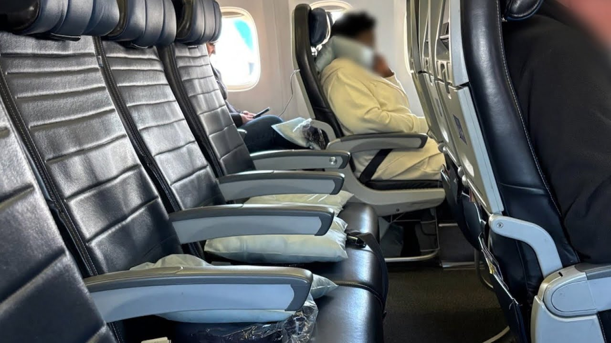

【美国游客数量出现大幅下降】
Summary: Stunning images of near-empty international flights highlight a sharp decline in U.S. tourism due to high tariffs and negative sentiment.
摘要： 近乎空无一人的国际航班照片凸显了由于高关税和负面情绪导致的美国旅游业急剧下滑。

⏱️ Estimated Reading Time: 2 min
Stunning images of near empty passenger planes are popping up on social media.
近乎空无一人的客机照片在社交媒体上频频出现。
These international flights have many tourists flying to the USA practically alone.
这些国际航班上飞往美国的游客几乎形单影只。
Shauna Massenill flew from London to Chicago.
肖娜·马塞尼尔从伦敦飞往芝加哥。
Look, barely anyone on board.
看，机上几乎没有人。
There was nobody there.
那里空无一人。
There was nobody in my row.
我那一排没有人。
It was really shocking.
这真的很令人震惊。
I've never been on a flight like that.
我从未坐过这样的航班。
This flight from Toronto to New York is also practically empty.
这趟从多伦多飞往纽约的航班也几乎空无一人。
and a flight from Toronto to Fort Meyers.
还有一趟从多伦多飞往迈尔斯堡的航班。
Row after row of empty seats.
一排排空座位。
Here in California, international travel is predicted to decline by 9% this year, driven by higher tariffs imposed by the Trump administration and negative sentiment toward the US.
在加州，由于特朗普政府征收的高关税和对美国的负面情绪，预计今年国际旅行将下降9%。
CBS travel editor Peter Greenberg.
CBS旅游编辑彼得·格林伯格。
The drop in numbers of Europeans traveling to the US is staggering and depending on the on the country, it's down as much as 42% over last year.
前往美国的欧洲游客数量急剧下降，具体到某些国家，比去年下降了42%。
That's just Europeans not traveling to the US.
这只是欧洲人不来美国的情况。
He says the numbers are worse for our neighbors to the north.
他表示，北方邻国的情况更糟。
Canadians traveling to the US down as much as 75%.
前往美国的加拿大游客下降了75%。
You're coming in from Montreal?
你是从蒙特利尔来的吗？
Yes.
是的。
And how was the flight full?
航班满员吗？
No, it was about 70% full.
不，大约70%满员。
Have you noticed amongst your fellow Canadians that they are less interested in coming here?
你有没有注意到你的加拿大同胞对来这里兴趣减少了？
Yes, many of them.
是的，很多人。
Here in New York, tourism is also being hit big time.
在纽约，旅游业也受到了巨大冲击。
Once again, driven by negative sentiment toward the USA.
同样是由于对美国的负面情绪。
This year, 400,000 fewer tourists are expected to visit the Big Apple.
今年，预计将有40万游客减少访问纽约。
But these visitors from France say they're happy they're here.
但这些来自法国的游客表示他们很高兴来到这里。
And you're having fun?
你们玩得开心吗？
Yeah.
是的。
I love America.
我爱美国。